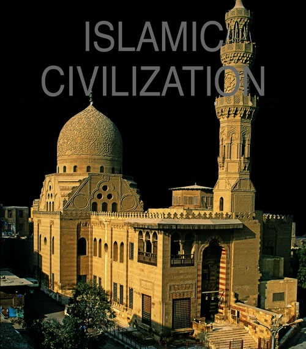

|  |
In 622 CE, the Byzantine Empire was expanding out of Constantinople (modern-day Istanbul), led by the Byzantine emperor Heraclius (d. 641). Heraclius launched several campaigns against the Sasanians, who had been occupying much of the Middle East, including Damascus and Jerusalem, for nearly a decade. Heraclius' war was nothing less than a crusade, intended to drive out the Sasanians and restore Christian rule to the Holy Land.
|
Tradition says that in 610 CE, Muhammad received the first verses of the Quran from Allah from the angel Gabriel. By 615, a community of his followers was established in his hometown of Mecca in present-day Saudi Arabia. Muhammad was a member of a middle clan of the high-prestige Western Arabic tribe of the Quraysh, However, his family was among his strongest opponents and detractors, considering him no more than a magician or soothsayer.
In 622, Muhammad was forced out of Mecca and began his hegira, moving his community of followers to Medina (also in Saudi Arabia.) There he was welcomed by the local followers, purchased a plot of land and built a modest mosque with adjoining apartments for him to live in. The mosque became the original seat of the Islamic government, as Muhammad assumed greater political and religious authority, drawing up a constitution and establishing trade networks apart and in competition with his Quraysh cousins. In 632, Muhammad died and was buried in his mosque at Medina, today still an important shrine in Islam.
After Muhammad's death, the growing Islamic community was led by the al-Khulafa' al-Rashidun, the Four Rightly Guided Caliphs, who were all followers and friends of Muhammad. The four were Abu Bakr (632–634), 'Umar (634–644), 'Uthman (644–656), and 'Ali (656–661). To them, "caliph" meant successor or deputy of Muhammad.
The first caliph was Abu Bakr ibn Abi Quhafa. He was selected after some contentious debate within the community. Each of the subsequent rulers was also chosen according to merit and after strenuous debate; that selection took place after the first and subsequent caliphs were murdered.
In 661, after the murder of 'Ali, the Umayyads gained control of Islam for the next several hundred years. The first of the line was Mu'awiya. He and his descendants ruled for 90 years. One of several striking differences from the Rashidun, the leaders saw themselves as the absolute leaders of Islam, subject only to God. They called themselves God's Caliph and Amir al-Mu'minin (Commander of the Faithful).
The Umayyads ruled when the Arab Muslim conquest of former Byzantine and Sasanid territories were taking effect, and Islam emerged as the major religion and culture of the region. The new society, with its capital moved from Mecca to Damascus in Syria, had included both Islamic and Arabic identities. That dual identity developed in spite of the Umayyads, who wanted to segregate out the Arabs as the elite ruling class. Under Umayyad control, the civilization expanded from a group of loosely and weakly-held societies in Libya and parts of eastern Iran to a centrally-controlled caliphate stretching from central Asia to the Atlantic Ocean.
In 750, the 'Abbasids seized power from the Umayyads in what they referred to as a revolution (dawla). The 'Abbasids saw the Umayyads as an elitist Arab dynasty and wanted to return the Islamic community back to the Rashidun period, seeking to govern in a universal fashion as symbols of a unified Sunni community. To do that, they emphasized their family lineage down from Muhammad, rather than his Quraysh ancestors, and transferred the caliphate center to Mesopotamia, with the caliph 'Abbasid Al-Mansur (r. 754–775) founding Baghdad as the new capital.
The 'Abbasids began the tradition of the use of honorifics (al-) attached to their names, to denote their links to Allah. They continued the use as well, using God's Caliph and Commander of the Faithful as titles for their leaders, but also adopted the title al-Imam.
The Persian culture (political, literary, and personnel) became fully integrated into 'Abbasid society. They successfully consolidated and strengthened their control over their lands. Baghdad became the economic, cultural, and intellectual capital of the Muslim world. Under the first two centuries of 'Abbasid rule, the Islamic empire officially became a new multicultural society, composed of Aramaic speakers, Christians and Jews, Persian-speakers, and Arabs concentrated in the cities.
By the early 10th century, however, the 'Abbasids were already in trouble and the empire was falling apart, a result of dwindling resources and inside pressure from newly independent dynasties in formerly 'Abbasid territories. These dynasties included the Samanids (819–1005) in eastern Iran, the Fatimids (909–1171) and Ayyubids (1169–1280) in Egypt and the Buyids (945–1055) in Iraq and Iran.
In 945, the 'Abbasid caliph al-Mustakfi was deposed by a Buyid caliph, and the Seljuks, a dynasty of Turkish Sunni Muslims, ruled the empire from 1055–1194, after which the empire returned to 'Abbasid control. In 1258, Mongols sacked Baghdad, putting an end to the 'Abbasid presence in the empire.
Next were the Mamluk Sultanate of Egypt and Syria. This family had its roots in the Ayyubid confederation founded by Saladin in 1169. The Mamluk Sultan Qutuz defeated the Mongols in 1260 and was himself assassinated by Baybars (1260–1277), the first Mamluk leader of the Islamic empire.
Baybars established himself as Sultan and ruled over the eastern Mediterranean part of the Islamic empire. Protracted struggles against the Mongols continued through the mid-14th century, but under the Mamluks, the leading cities of Damascus and Cairo became centers of learning and hubs of commerce in international trade. The Mamluks, in turn, were conquered by the Ottomans in 1517.
The Ottoman Empire emerged about 1300 CE as a small principality on former Byzantine territory. Named after the ruling dynasty, the Osman, the first ruler (1300–1324), the Ottoman empire grew throughout the next two centuries. In 1516–1517, the Ottoman emperor Selim I defeated the Mamluks, essentially doubling his empire's size and adding in Mecca and Medina. The Ottoman Empire began to lose power as the world modernized and grew closer. It officially came to an end with the close of World War I.